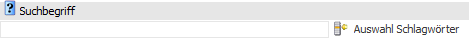

Im Kopf des Fenster "Archiv-Suche" steht die Standard-Selektion zur Verfügung, welche aus den Elementen "Suchbegriff" und "Zeitraum" besteht.

Schnellsuche

Ø Suchbegriff
Wird im Feld "Suchbegriff" ein Suchbegriff eingegeben und der Button "Anzeige" angewählt bzw. Taste F5 / Enter gedrückt, dann wird sofort die Suche ausgelöst. Hierbei werden alle Schlagwörter durchsucht, welche laut gewählten Formulartyp bzw. Suchstrategie genutzt werden.
Hinweis
Mit Hilfe des Buttons "Auswahl Schlagwörter" können die Suchparameter temporär verändert werden.
Ø
Die Schnellsuche erfolgt immer in abhängig von dem gewählten Formulartyp und ggfs. der gewählten Suchstrategie, d.h. es wird in den dort definierten Schlagwörtern gesucht.
Wenn in speziellen Schlagworten gesucht werden soll, dann kann dieses in dem Fenster Archiv-Suche - Schlagwörter definiert werden, welches mit diesem Button geöffnet wird.
Selektion
Ø Zeitraum
Mit Hilfe dieser Auswahlliste kann ausgewählt werden, von wann die anzuzeigenden Archivdokumente stammen sollen. Dabei stehen folgende Optionen zur Verfügung:
ü 0 - <KEINE>
ü 1 - aktuelles Jahr
ü 2 - Halbjahr
ü 3 - 1. Quartal
ü 4 - 2. Quartal
ü 5 - 3. Quartal
ü 6 - 4. Quartal
ü 7 - aktueller Monat
ü 8 - aktuelle Woche
ü 9 - Heute
ü 10 - Vorjahr